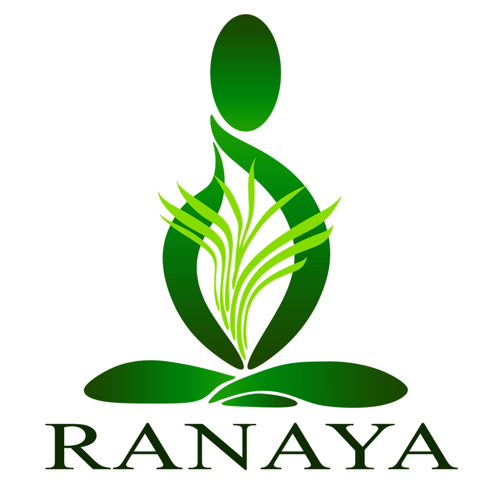
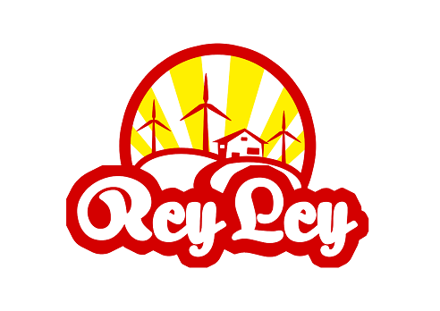

Incubatees
FIRST BASTION TECH SOLUTIONS focuses system integration of technological equipment, namely but not limited to: (1) Background Music and Paging Systems, (2) CCTV Systems and Security solutions, (3) Signage and Large Format Display Systems, (4) PABX and Telephony Systems and (5) Health solutions.
A multimedia arts and visual effects + mobile app and Game Development startup company based in Iloilo City and is registered under Securities and Exchange Commission of the Republic of the Philippines.

A company that manufactures and sells lemongrass oil, lemongrass juice and lemongrass hydrosol for improving overall health and wellness.
GOVESMART provides solutions to the various IT needs of private and government organizations. They develop, create, maintain, and upgrade fully customized system software and web based services for our client-partners. They also tailor-fit every system to be responsive to the unique IT needs of their client-partners.
Jalco Herbal Products has been established to focus on personal defense to the effect of Stress in our everyday lives. Based on wide observations and backed by vast research, stress has been the trigger to most of body ailments.
It intends to do a series of technologies such as full software development, research and development on sustainable green building systems, trainings on software development and various software platform specialized on building information model (BIM) and industrial production drawing prep. The company also intend to do partnership with BCA Academy Singapore, manning agencies locally and abroad and with POEA and DOLE to provide and uplift employment in the region.

Rey Ley Fish and Farm Haven specializing in roselle production for wine, prunes, tea, jam, juice concentrate, candies, etc. Produces organic rice, vegetables and fish.
History of GTBI
The DOST-Technology Resource Center (TRC) and the idea of technology business incubation (TBI) was first made known to WVSU through Ms. Cheryl L. Ortega, formerly training officer of the Development Academy of the Philippines and became Development Officer
III of TRC and after a series of DOST visitations.
WVSU R&D started to present its research products in many Technology Fora and Scientific Fair sponsored by DOST-TRC in Manila, Pampanga, and Cebu (ca 2009-2012).
2009
The first MOA between WVSU and TRC under Director-General Dennis L. Cunanan was executed in January 2010 in order to make a feasibility study on the establishment of a Green Technology Business Incubation Facility (GTBI) in WVSU.
History of GTBI - 2010
The feasibility study was completed on the same year through the financial support of DOST-PCASTRD (Philippine Council for Advanced Science and Technology Research and Development) now known as PCIEERD or the Philippine Council for Industry, Energy and Emerging Technologies Research and Development. With about 38 incubatee-respondents, a Business Plan on the GTBI was made through the technical support of TRC and the all-out support of then President Pablo E. Subong, Jr. We were then on the process of finding financial support for the construction of the building.

In March 10, 2011, the GTBI at WVSU was given the lot near Magsaysay Road for the initial ground breaking ceremonies attended by TRC, DTI, DOST, Iloilo City Government and CHED officials.
History of GTBI - 2011
IT Research Presentation Represented by IICT Students, won the 2nd , 3rd and 4 th place respectively. February 11, 2011. Mega Trade Hall 3 at SM Mega Mall Quezon City.
In this year, a meeting was also held at Guimaras.
This was also the time where the ground breaking ceremony for the GTBI building was initiated.


The construction of the Building started in 2013 with the support of OIC-President Joselito F. Villaruz, MD, VPFA Bobby Gerardo, and IICT Director Joel T. De Castro as well as the proposal for PCIEERD for the establishment of the Natural Products Business
Incubation Facility in WVSU.